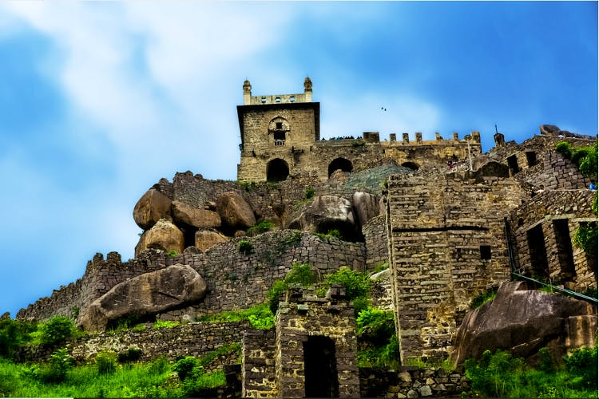

#Golconda Fort
.

Around 11 km from Hyderabad, the impressive 16th century Golconda Fort is one of the most famous forts in India.
The capital of the erstwhile Golconda kingdom,the fort was the centre of the Golconda stronghold in the region and was thus built as an impregnable structure.
Its former glory and majesty can still be seen in the mighty ramparts and fortifications encircling it. Situated on a 120-m-high hill, it enjoyed a prominent vantage point from where a lookout for the enemy could be kept. Today, its high-rising position gives tourists sweeping views of the surrounding areas, where one can see almost as far as the horizon.
Climbing further up, one can spot the stunning Deccan plateau and also get a bird's eye view of the bustling and lit-up city.Touring the fort, one can sample the rich flavour of its history, which saw the throne change hands among various dynasties. While the several beautiful palaces housed here echo the royal grandeur of times gone by, the famous Fateh Rahben gun, reminds one of the brutal onslaught that the fort experienced when Mughal emperor Aurangzeb laid seize to it. In the evening, a unique light and sound show takes one back in time when Golconda was full of life and splendour.The Golconda Fort was originally built as a mud fort, with the Yadavas of Deogiri and the Kakatiya dynasty of Warangal ruling over it.
Moreover, the fort was a citadel until Mughal emperor Aurangzeb conquered it in 1687. The fort is a marvellous work of engineering of that time and perhaps that is why so many mighty emperors sought to occupy it. Its massive gates have been studded with iron spikes to stop elephants from breaking them down and inside, a futuristic concealed water pipeline ensured uninterrupted water supply during sieges. The most spectacular, however, is the ingenious acoustics of the fort that ensured that even the slightest sound from the entry gates would echo across the complex. It also has four drawbridges, eight gateways, halls, and stables. The outermost area houses the Fateh Darwaza (victory gate),which is called so because Aurangzeb’s victorious army marched successfully through it.
.
Explore Golconda Fort!

Places to eat
|

Best time to visit Golconda Fort |

Things to do |

History |
How to reach Golconda Fort |
.
Rate your Experience!